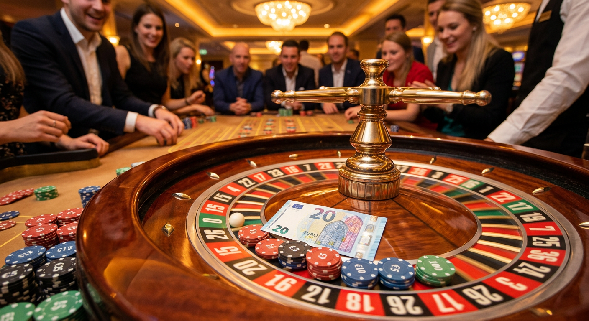
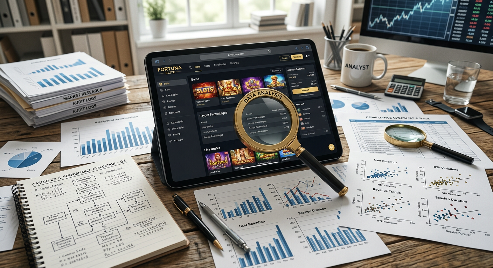
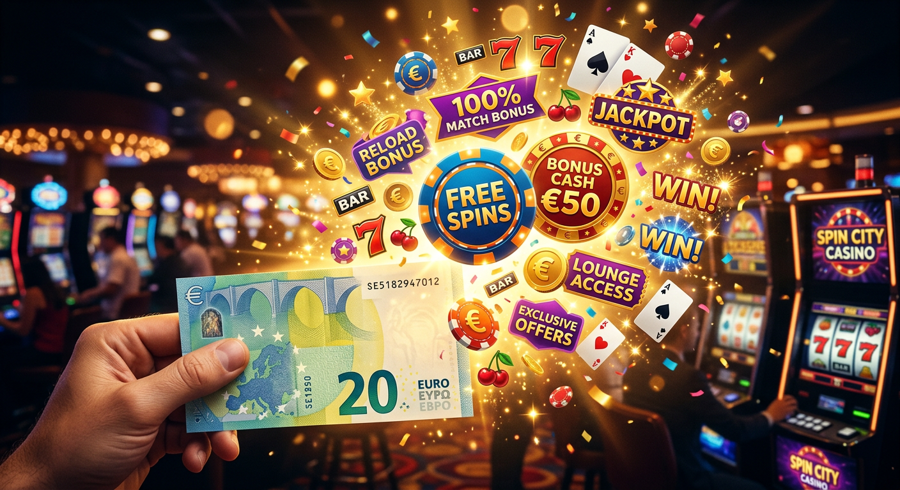
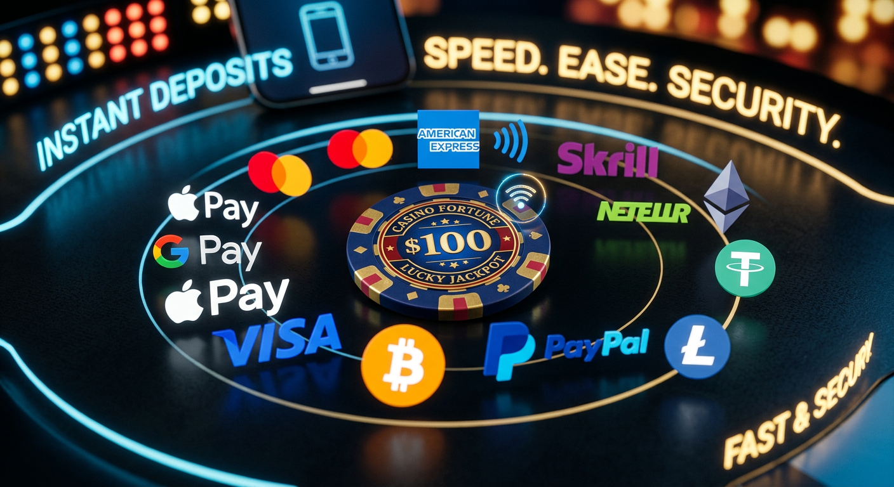
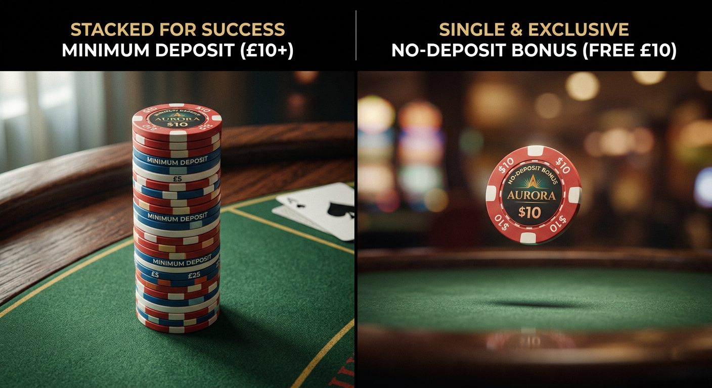

Casinò non AAMS deposito 20 euro: Guida completa ai migliori siti
Nel panorama del gioco d'azzardo online del 2026, la ricerca della piattaforma ideale rappresenta una sfida costante per gli appassionati italiani. Molti giocatori cercano un equilibrio tra accessibilità economica e generosità delle offerte. In questo contesto, i casinò non AAMS deposito 20 euro si sono affermati come la scelta prediletta per chi desidera esplorare cataloghi vasti senza impegnare capitali eccessivi, ma garantendosi comunque l'accesso alle promozioni più succulente del mercato internazionale.
Le piattaforme estere, spesso dotate di licenze rilasciate da autorità come la MGA di Malta o la eGaming di Curaçao, offrono una flessibilità che difficilmente si riscontra nei siti locali. Rispetto a un casinò non aams deposito 1 euro, versare venti euro permette di sbloccare quasi sempre il pacchetto di benvenuto completo, inclusi i giri gratuiti sulle slot più moderne prodotte da colossi come NetEnt e Microgaming.
Questa guida dettagliata esplorerà ogni aspetto tecnico, legale e ludico di queste piattaforme nel 2026. Analizzeremo i criteri di sicurezza, i metodi di pagamento più rapidi come Bitcoin e le criptovalute, e vedremo come massimizzare ogni sessione di gioco mantenendo un approccio responsabile e consapevole.
Perché scegliere i casinò non AAMS con ricarica da 20€?
Scegliere un casinò non AAMS deposito 20 euro nel 2026 significa puntare sulla qualità dell'esperienza utente. Questa cifra non è casuale: rappresenta la soglia standard per attivare la maggior parte delle promozioni "match bonus" del 100% o superiore. Mentre con ricariche inferiori si corre il rischio di essere esclusi dalle offerte migliori, con 20 euro il giocatore si posiziona in una fascia di utenza premium, pur mantenendo un rischio finanziario contenuto.
I siti internazionali tendono inoltre a offrire limiti di vincita molto più alti e una burocrazia ridotta. La flessibilità normativa al di fuori del circuito ADM consente a questi operatori di investire maggiormente in tecnologia e varietà ludica, offrendo migliaia di titoli che spaziano dalle slot classiche ai tavoli live in alta definizione condotti da croupier professionisti.
Il perfetto equilibrio tra rischio e bonus
Il versamento di 20 euro è considerato il "gold standard" per chi vuole testare un nuovo operatore. È una somma sufficiente per completare i requisiti di puntata di molti bonus senza dover effettuare ulteriori ricariche immediate. In molti casi, un casinò non AAMS deposito 20 euro permette di iniziare con un bankroll effettivo di 40 o 60 euro, triplicando le possibilità di esplorare diversi giochi e trovare quello più redditizio.
Accesso a cataloghi slot più ampi
A differenza dei circuiti nazionali, i portali esteri collaborano con una gamma vastissima di fornitori. Oltre ai noti nomi del settore, è possibile trovare software house emergenti che introducono meccaniche di gioco innovative, come i sistemi Megaways evoluti o i jackpot progressivi condivisi a livello globale. Questa varietà è uno dei motivi principali per cui i giocatori migrano verso queste piattaforme nel 2026.
Recensioni dei top casinò non AAMS deposito 20 euro

Per aiutarvi nella scelta, abbiamo selezionato le piattaforme che nel 2026 si distinguono per affidabilità, rapidità nei pagamenti e qualità del software. Ogni operatore menzionato è stato testato rigorosamente dal nostro team di esperti IT per garantire che gli standard di sicurezza siano conformi alle aspettative attuali.
- Millioner: Una piattaforma d'élite che si distingue per un'interfaccia utente ultra-veloce e un sistema di fedeltà unico. Ideale per chi cerca un casinò non AAMS deposito 20 euro con prelievi immediati.
- Roulettino: Specializzato in giochi da tavolo e live casino, offre un'esperienza immersiva con croupier che parlano diverse lingue, rendendo ogni sessione estremamente realistica.
- Wyns: Questo operatore punta tutto sul mobile gaming. L'applicazione è ottimizzata per gli ultimi smartphone del 2026, garantendo sessioni fluide e senza lag.
- Kinbet: Un ibrido perfetto tra scommesse sportive e casinò non AAMS deposito 20 euro. Offre mercati esclusivi e una sezione slot in continuo aggiornamento.
- Dragonia: Caratterizzato da una grafica fantasy mozzafiato, Dragonia premia i nuovi utenti con pacchetti di benvenuto che includono centinaia di FS (free spins).
- Divaspin: La scelta ideale per gli amanti delle slot machine. Con oltre 5.000 titoli disponibili, è praticamente impossibile annoiarsi su questa piattaforma.
Oltre a queste novità, giganti del settore come 22bet e Wild Tokyo continuano a dominare il mercato grazie alla loro solida reputazione. Anche Betlabel si è confermato nel 2026 come un attore fondamentale, offrendo condizioni di gioco eque e una trasparenza assoluta sui termini e le condizioni delle offerte.
Come valutiamo le piattaforme di gioco estere

La nostra analisi non si ferma alla superficie. Valutare un casinò non AAMS deposito 20 euro richiede un'analisi tecnica profonda. Verifichiamo costantemente la stabilità dei server, la protezione contro gli attacchi informatici e la correttezza degli algoritmi RNG (Random Number Generator). In un'era dove la sicurezza dei dati è fondamentale, non lasciamo nulla al caso.
Un aspetto fondamentale è il confronto con altre tipologie di portali, come un casinò non aams deposito 10 euro, per capire se il valore aggiunto dei 20 euro sia effettivamente giustificato da un incremento proporzionale dei benefici offerti all'utente finale.
Licenze internazionali e crittografia SSL
Sebbene non possiedano una licenza ADM (ex AAMS), questi siti devono comunque operare sotto rigide regolamentazioni internazionali. Controlliamo che ogni casinò non AAMS deposito 20 euro utilizzi protocolli di crittografia SSL a 256 bit per proteggere le transazioni finanziarie. La presenza di certificazioni da parte di enti indipendenti come eCOGRA è un ulteriore indicatore di serietà.
Varietà di provider e software house
La qualità di un portale si misura dai partner con cui collabora. Un buon casinò non AAMS deposito 20 euro nel 2026 deve offrire titoli sviluppati da leader come NetEnt, Microgaming e Play'n GO. La disponibilità di slot con RTP (Return to Player) elevato è essenziale per garantire ai giocatori sessioni di gioco prolungate e oneste.
| Brand | Bonus Benvenuto | Metodi Popolari | Punti di Forza |
|---|---|---|---|
| Millioner | 100% fino 500€ | Bitcoin, Visa | Prelievi istantanei |
| Roulettino | Pacchetto fino 1000€ | Litecoin, Mastercard | Tavoli Live Esclusivi |
| Dragonia | 200 FS + 150% Bonus | Ethereum, Skrill | Programma VIP |
| Wild Tokyo | 100 fino 150€ | Paysafecard, Neteller | Design Cyberpunk |
Bonus e promozioni attivabili con 20 euro

Il vantaggio principale di un casinò non AAMS deposito 20 euro risiede nella capacità di attivare quasi ogni tipo di incentivo disponibile. Nel 2026, le strutture dei premi sono diventate molto più dinamiche, con sistemi di gamification che rendono il gioco ancora più coinvolgente. Tuttavia, è bene ricordare che ogni promozione porta con sé dei requisiti di scommessa che vanno letti attentamente.
Spesso i giocatori si chiedono se convenga di più un deposito minore, magari consultando un casinò non aams deposito 5 euro. La risposta dipende dagli obiettivi: se si cerca solo un test veloce, 5 euro bastano; se si punta a una sessione strutturata con un'offerta di benvenuto attiva, i 20 euro sono necessari.
Bonus di benvenuto sul primo versamento
La maggior parte degli operatori offre una formula classica: 100 fino a cifre che possono toccare anche i 500 o 1000 euro. Depositando 20 euro, riceverete altri 20 euro di credito aggiuntivo, portando il totale a 40 euro. Questo tipo di offerta è il pilastro su cui si fonda l'attrattiva di ogni casinò non AAMS deposito 20 euro moderno.
Giri gratuiti e pacchetti cumulativi
Oltre al credito extra, è comune ricevere giri gratuiti (FS) da utilizzare su slot specifiche. Questi giri permettono di vincere denaro reale senza intaccare il proprio deposito iniziale. Spesso il pacchetto è strutturato per erogare i giri nel corso di diversi giorni, incentivando il giocatore a tornare quotidianamente sul portale per scoprire nuove opportunità.
Metodi di pagamento per depositi immediati

La velocità e la sicurezza delle transazioni sono i pilastri del gioco online nel 2026. Un casinò non AAMS deposito 20 euro di alto livello deve offrire una pluralità di opzioni che si adattino alle diverse esigenze degli utenti IT. Dalle classiche carte di credito alle più innovative soluzioni blockchain, la scelta è vastissima.
È importante notare che alcuni metodi di pagamento potrebbero essere esclusi dall'attivazione di determinati incentivi. Prima di ricaricare il vostro account in un casinò non AAMS deposito 20 euro, controllate sempre se portafogli elettronici come Skrill o Neteller sono compatibili con il pacchetto di benvenuto che intendete riscattare.
Portafogli elettronici e Criptovalute
Gli e-wallets rimangono popolari per la loro immediatezza, ma la vera rivoluzione del 2026 è rappresentata dalle crypto. Utilizzare Bitcoin, Ethereum o Litecoin in un casinò non AAMS deposito 20 euro garantisce non solo l'anonimato, ma anche commissioni quasi inesistenti e tempi di prelievo che spesso non superano i 15 minuti.
Carte di credito internazionali (Visa e Mastercard)
Nonostante l'ascesa delle nuove tecnologie, le carte di credito Visa e Mastercard rimangono lo strumento più diffuso. La loro integrazione nei sistemi di sicurezza 3D Secure garantisce che ogni versamento su un casinò non AAMS deposito 20 euro sia protetto contro frodi e utilizzi non autorizzati, offrendo una tranquillità impagabile all'utente meno esperto di tecnologia.
Differenza tra deposito minimo e bonus senza ricarica

È cruciale distinguere tra un versamento minimo e un'offerta senza deposito. Mentre la ricarica da 20 euro garantisce l'accesso a bonus corposi e prelievi più semplici, le offerte gratuite hanno spesso termini molto restrittivi, come cap sulle vincite massime e requisiti di giocata (wagering) elevatissimi che le rendono difficili da trasformare in denaro reale.
Per chi vuole iniziare con ancora meno rischi, un casinò non aams deposito 3 euro può essere un buon punto di partenza, ma bisogna essere consapevoli che i vantaggi in termini di longevità di gioco saranno limitati rispetto a quelli offerti da un casinò non AAMS deposito 20 euro.
Consigli per una gestione corretta del bankroll
Giocare in modo intelligente significa saper gestire il proprio denaro. Quando si sceglie un casinò non AAMS deposito 20 euro, l'obiettivo non dovrebbe essere solo vincere, ma divertirsi senza stress. Dividere il deposito in piccole puntate, ad esempio da 0,20€ per giro di slot, permette di effettuare ben 100 giocate con la ricarica iniziale, massimizzando il tempo di intrattenimento.
- Stabilite un limite di tempo per ogni sessione di gioco.
- Non inseguite mai le perdite: se la fortuna non gira, è meglio fermarsi.
- Utilizzate gli strumenti di auto-limitazione offerti dal casinò non AAMS deposito 20 euro scelto.
- Prelevate una parte delle vincite non appena possibile per mettere al sicuro il capitale iniziale.
Il ruolo delle licenze internazionali
La mancanza del bollino ADM non significa mancanza di controlli. I casinò non AAMS deposito 20 euro operano spesso sotto la giurisdizione di Curacao, che negli ultimi anni ha inasprito notevolmente i propri standard qualitativi. Queste licenze permettono agli operatori di accettare giocatori da tutto il mondo, offrendo un ambiente multiculturale e competitivo che favorisce l'utente finale attraverso quote migliori e ritorni percentuali più alti.
Siti affidabili come 22bet hanno costruito la loro fortuna proprio sulla solidità della loro licenza internazionale, dimostrando che la sicurezza può esistere anche al di fuori dei confini nazionali italiani. La trasparenza su dove la società ha sede e come contattare l'ente regolatore è un segno distintivo di ogni serio casinò non AAMS deposito 20 euro.
Slot machine e provider popolari
Il cuore pulsante di ogni casinò non AAMS deposito 20 euro sono le slot machine. Nel 2026, la tecnologia ha permesso di creare giochi con grafiche 3D mozzafiato e colonne sonore orchestrali. La presenza di NetEnt garantisce titoli iconici, mentre Microgaming continua a essere il punto di riferimento per chi cerca jackpot milionari.
Oltre alle slot, non mancano i giochi da tavolo classici. Roulette, Blackjack e Baccarat sono disponibili in centinaia di varianti, incluse quelle in realtà aumentata che permettono un'immersione totale. Un casinò non AAMS deposito 20 euro che si rispetti deve offrire una libreria di almeno 3.000 titoli per soddisfare ogni tipo di palato ludico.
Vantaggi delle criptovalute nel 2026
L'integrazione della tecnologia blockchain ha cambiato radicalmente il modo in cui interagiamo con un casinò non AAMS deposito 20 euro. Oltre alla velocità, le criptovalute offrono il concetto di "Provably Fair", un sistema che permette al giocatore di verificare autonomamente che l'esito di ogni giocata sia stato effettivamente casuale e non manipolato.
L'uso di monete come Ethereum o Litecoin permette inoltre di accedere a promozioni esclusive dedicate ai crypto-utenti, che spesso superano in valore quelle tradizionali in valuta fiat (Euro). Nel 2026, possedere un wallet digitale è quasi un requisito fondamentale per chi vuole sfruttare al massimo ogni casinò non AAMS deposito 20 euro.
Esperienza mobile e applicazioni
Nel 2026, oltre l'85% dei giocatori accede al proprio casinò non AAMS deposito 20 euro preferito tramite smartphone. Questo ha spinto gli sviluppatori a creare interfacce "mobile-first", dove ogni pulsante è posizionato ergonomicamente per il pollice. Che si tratti di un'app nativa o di un sito web reattivo, l'esperienza deve essere istantanea e priva di intoppi grafici.
Le prestazioni IT sono state ottimizzate per funzionare perfettamente anche con connessioni non eccelse, grazie all'uso di tecnologie di compressione dati avanzate. Giocare su un casinò non AAMS deposito 20 euro mentre si è in viaggio non è mai stato così fluido e sicuro come quest'anno.
Assistenza clienti e supporto in lingua italiana
Un timore comune riguarda la barriera linguistica. Fortunatamente, i migliori casinò non AAMS deposito 20 euro del 2026 hanno investito massicciamente nel supporto localizzato. È ormai standard trovare chat dal vivo attive 24/7 con operatori madrelingua pronti a risolvere qualsiasi problema tecnico o dubbio relativo ai prelievi.
Oltre alla chat, molti operatori offrono supporto via email e sezioni FAQ estremamente dettagliate. Prima di registrarvi in un nuovo casinò non AAMS deposito 20 euro, provate a inviare una domanda di prova al supporto: la velocità e la precisione della risposta vi diranno molto sulla serietà dell'azienda.
Sicurezza e protezione dei dati (SSL, KYC)
La protezione della privacy è un diritto fondamentale. Ogni casinò non AAMS deposito 20 euro degno di nota implementa rigorose procedure KYC (Know Your Customer) per prevenire il riciclaggio di denaro e proteggere gli account degli utenti. Sebbene la verifica possa sembrare un fastidio burocratico, è la garanzia che il sito operi legalmente e che i vostri fondi siano al sicuro.
L'uso di protocolli SSL di ultima generazione assicura che nessuna informazione sensibile possa essere intercettata da malintenzionati durante il transito tra il vostro dispositivo e i server del casinò non AAMS deposito 20 euro. La sicurezza informatica è, e rimarrà, la priorità assoluta per il mercato del gioco nel 2026.
Limiti di puntata e flessibilità
Uno dei motivi del successo dei siti non AAMS è l'assenza di limiti soffocanti imposti da enti governativi troppo rigidi. In un casinò non AAMS deposito 20 euro, i giocatori possono godere di limiti di puntata molto ampi, adatti sia al giocatore occasionale che al cosiddetto "high roller" che desidera scommettere cifre importanti sui tavoli live.
Questa libertà si estende anche ai limiti di prelievo mensili, che sono solitamente molto più alti rispetto ai portali italiani, permettendo di incassare grandi vincite in un'unica soluzione senza dover attendere mesi per completare il trasferimento dei fondi sul proprio conto bancario.
Comparazione con i siti ADM
Mettere a confronto un casinò non AAMS deposito 20 euro con un sito con licenza italiana rivela differenze sostanziali. I siti ADM offrono una protezione legale diretta dallo Stato, ma peccano spesso in termini di varietà di giochi e generosità dei bonus a causa della tassazione elevata. Al contrario, le piattaforme estere possono permettersi di restituire una fetta maggiore delle entrate ai giocatori sotto forma di premi e cashback.
Inoltre, l'esperienza utente in un casinò non AAMS deposito 20 euro è spesso più snella, con meno interruzioni pubblicitarie e un design più moderno e accattivante, in linea con le tendenze grafiche globali del 2026. Maggiori informazioni sul funzionamento delle licenze internazionali sono disponibili su siti autorevoli come Wikipedia.
Pro e Contro
Ogni scelta comporta vantaggi e svantaggi. Analizziamo onestamente cosa significa giocare su un casinò non AAMS deposito 20 euro nel 2026.
- Pro:
- Bonus di benvenuto molto più elevati della media.
- Ampia scelta di metodi di pagamento, inclusi Bitcoin e Paysafecard.
- Assenza di limiti di puntata minimi e massimi troppo stringenti.
- Accesso a giochi in anteprima mondiale non ancora disponibili in Italia.
- Contro:
- Mancanza della tutela diretta dell'agenzia ADM.
- Alcuni siti potrebbero non avere l'interfaccia interamente tradotta.
- Possibile necessità di utilizzare strumenti di pagamento internazionali.
È essenziale pesare questi fattori in base alle proprie priorità personali. Per molti esperti del settore, i vantaggi offerti da un casinò non AAMS deposito 20 euro superano di gran lunga i potenziali rischi, a patto di scegliere operatori certificati e rinomati.
FAQ: Domande frequenti sui casinò non AAMS deposito 20 euro
In questa sezione conclusiva, rispondiamo ai dubbi più comuni che i nostri lettori ci pongono riguardo alla scelta di un casinò non AAMS deposito 20 euro nel 2026.
È legale giocare su un casinò non AAMS deposito 20 euro?
Sebbene questi siti non abbiano una licenza italiana, non è illegale per un cittadino italiano iscriversi e giocare su piattaforme estere. La responsabilità del possesso della licenza ricade sull'operatore, non sull'utente finale.
Quali sono i tempi di prelievo tipici?
In un buon casinò non AAMS deposito 20 euro del 2026, i tempi variano in base al metodo scelto. Le criptovalute sono istantanee, mentre i bonifici e le carte di credito possono richiedere da 1 a 3 giorni lavorativi.
Posso giocare con i 20 euro da smartphone?
Assolutamente sì. Tutti i siti raccomandati in questa guida sono perfettamente ottimizzati per dispositivi mobile, permettendo di gestire il conto e giocare a ogni titolo direttamente dal browser del telefono o tramite app dedicata.
Cosa succede se il sito viene oscurato?
Gli operatori internazionali utilizzano spesso "mirror site" per garantire la continuità del servizio. Se un casinò non AAMS deposito 20 euro viene bloccato, l'azienda solitamente comunica via email il nuovo indirizzo funzionante per permettere agli utenti di accedere ai propri fondi senza problemi.
I giochi sono truccati?
No, a patto di scegliere siti licenziati. I casinò non AAMS deposito 20 euro seri utilizzano generatori di numeri casuali testati da laboratori come iTech Labs per garantire che ogni esito sia equo e non prevedibile.

Scrittore e ricercatore nel campo del turismo e delle attività outdoor in Italia.